Ruime kamers en suites
Boek een hotelkamer in ZeistErvaar het in Figi
FIGI biedt een breed scala aan culturele, culinaire, congres- en overnachtingsfaciliteiten. Onder één dak zit een hotel, restaurant, talrijke vergader- en congreszalen, bioscoop en theater.
-
Reserveer een tafel
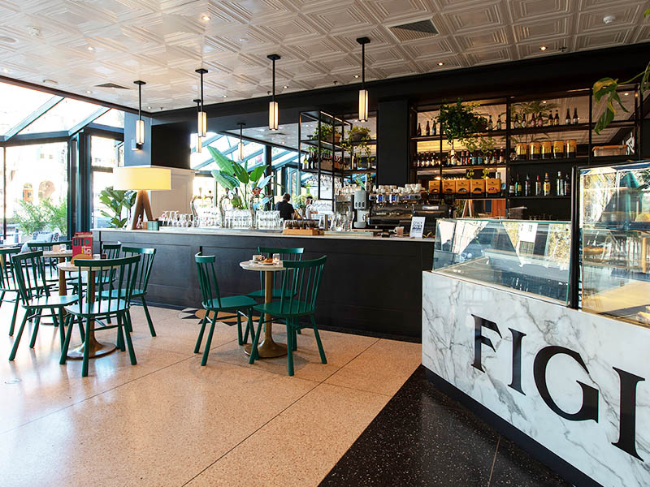
-
Boek een kamer
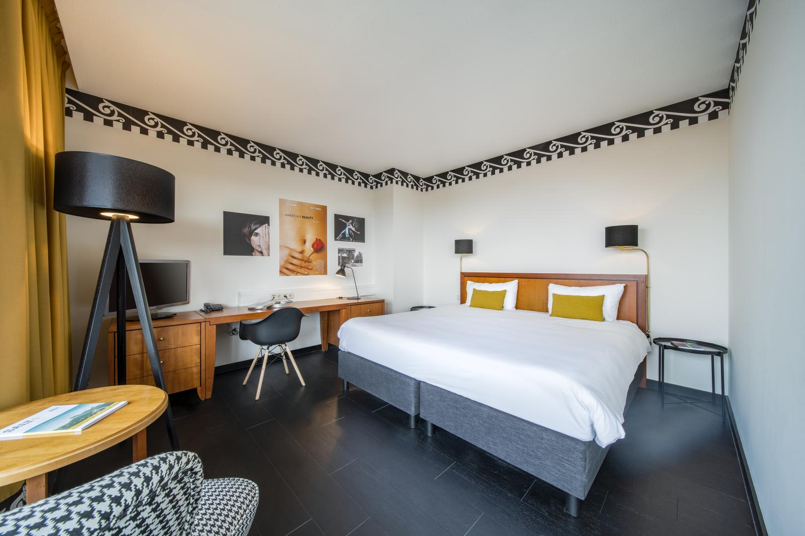
-
Kies een film
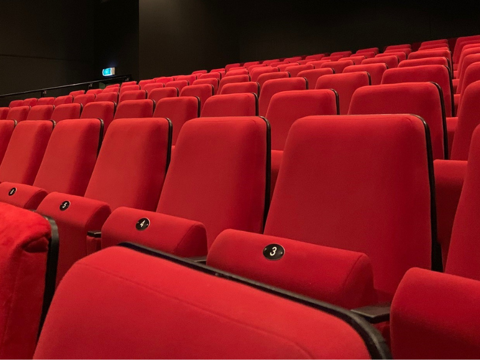
-
Theater Voorstellingen
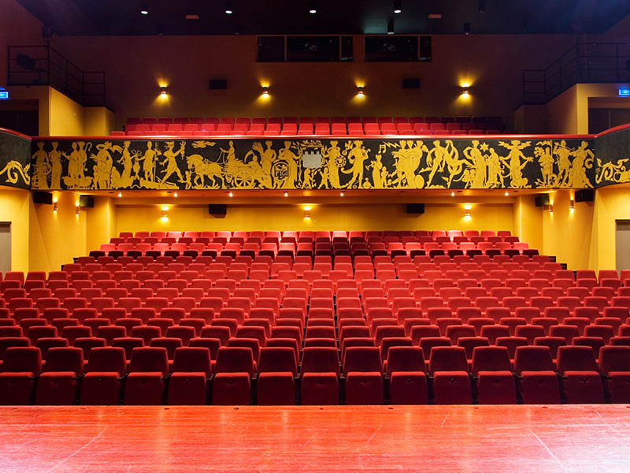
-
Meetings en Events
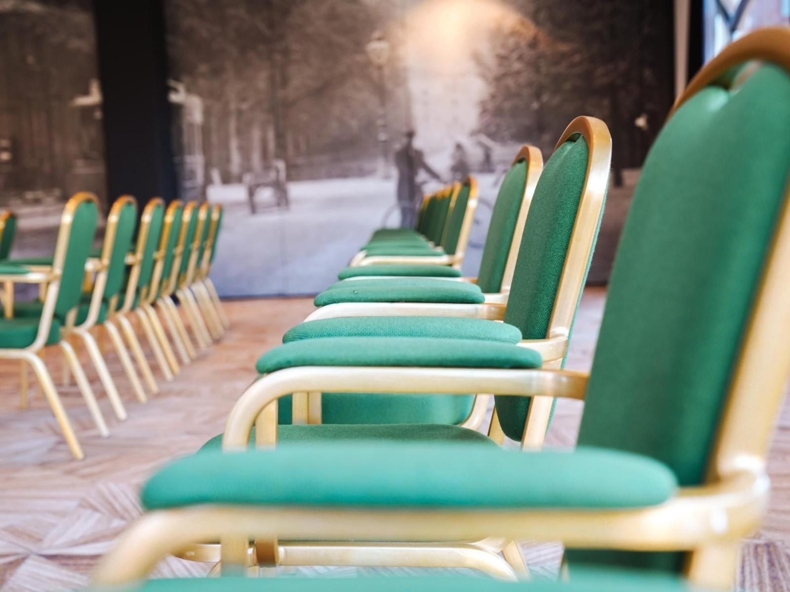
-
Werken bij Figi
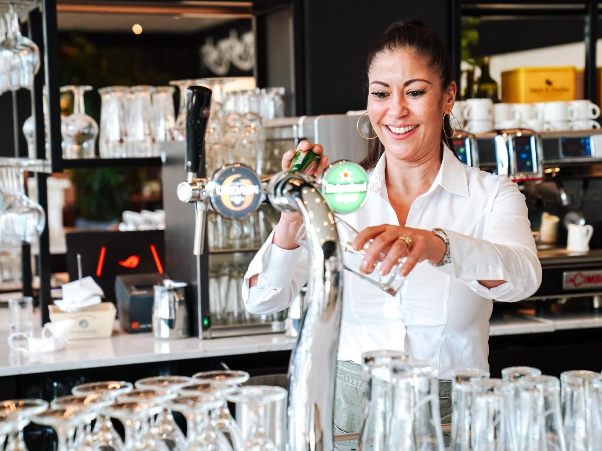
-
Familiebedrijf Figi

-
Bereikbaarheid
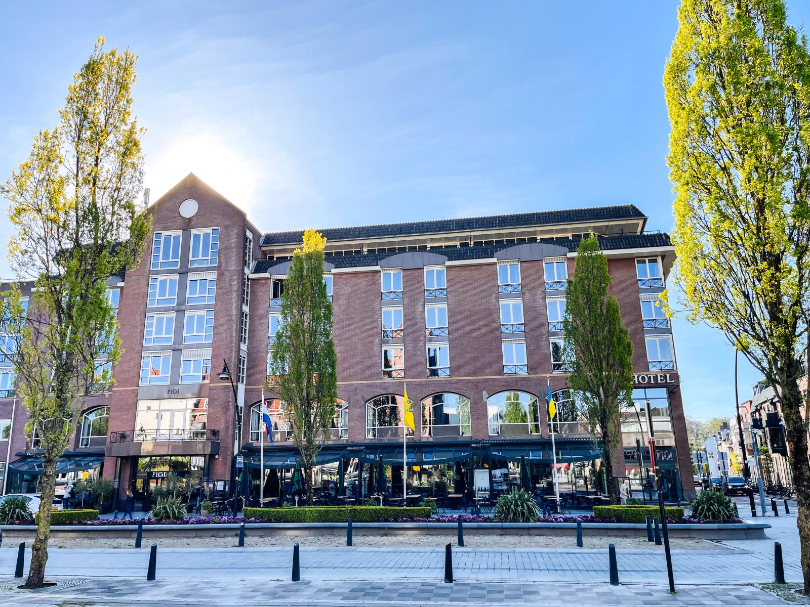
Plan je verblijf
Boek een kamer
Hotel Reviews
-
Prima verblijf na aanleiding van een bruiloft in slot Zeist. Lekkere geslapen, prima bedden, schone kamers en erg uitgebreid ontbijt. Het personeel was erg vriendelijk en behulpzaam. Een echte aanrader.
Anita V.
-
We waren in coronatijd ook al eens geweest. Maar het was thuiskomen voor ons. Vriendelijk personeel, perfecte locatie om in de buurt wat te gaan ondernemen. mooie kamers,kortom, wij zijn fan van het hotel en gaan zeker nog een keer terugkomen
Fiona J.
-
Prachtige omgeving om te fietsen. Heerlijke bedden, prima ontbijt en gastvrij personeel. Ook heel leuk: de bioscoop is vanuit het hotel binnendoor te bereiken en je krijgt nog eens 3,50 korting op je bioscoopkaartje. Vorig jaar ook al geweest en volgend jaar gaan we weer.
Sjoerd V.
-
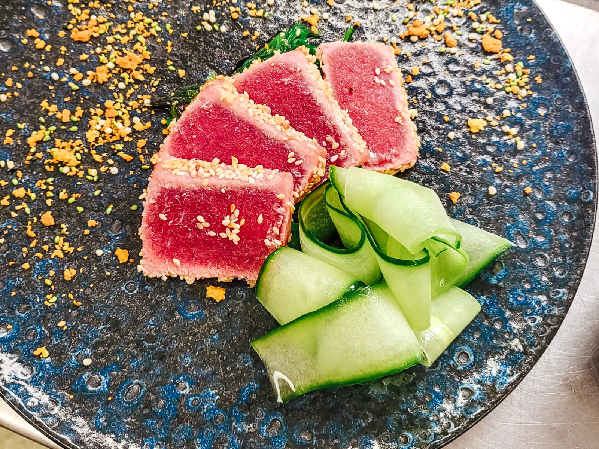
Tonijn Tataki met Komkommerlinten
Licht geschroeide tonijn, omhuld met geroosterde sesam, geserveerd op een frisse salade van komkommerlinten. Afgewerkt met krokante accenten en een zacht citrus-aroma voor een verfijnde, lichte smaakbeleving.
-
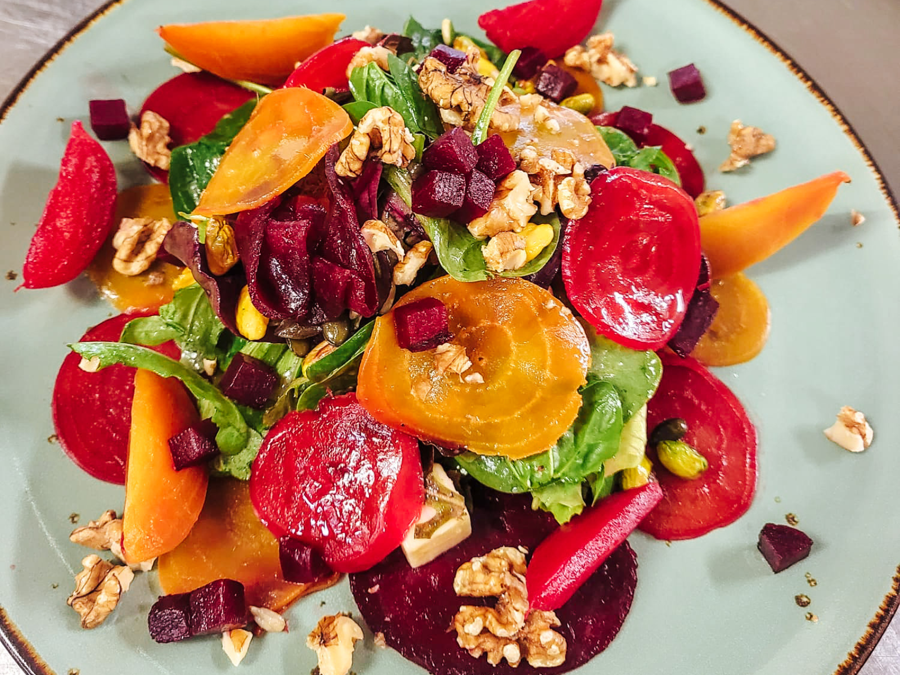
Kleurrijke Bietensalade met Walnoot & Pistache
Een levendige mix van rode en gele biet, gecombineerd met jonge bladgroenten. Verrijkt met geroosterde walnoten, pistache en een frisse vinaigrette voor een knapperige en smaakvolle sensatie.
-
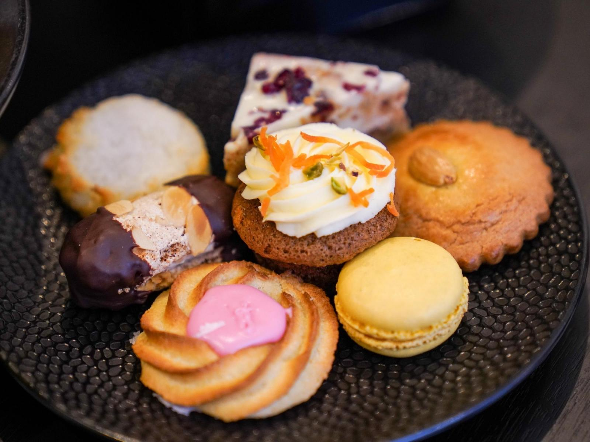
Huisgemaakte Patisserie Selectie
Een assortiment van ambachtelijke patisserie, waaronder luchtige cakejes, verfijnde koekjes en romige zoetigheden. Ideaal voor bij de koffie of als elegante afsluiting van de maaltijd.
-
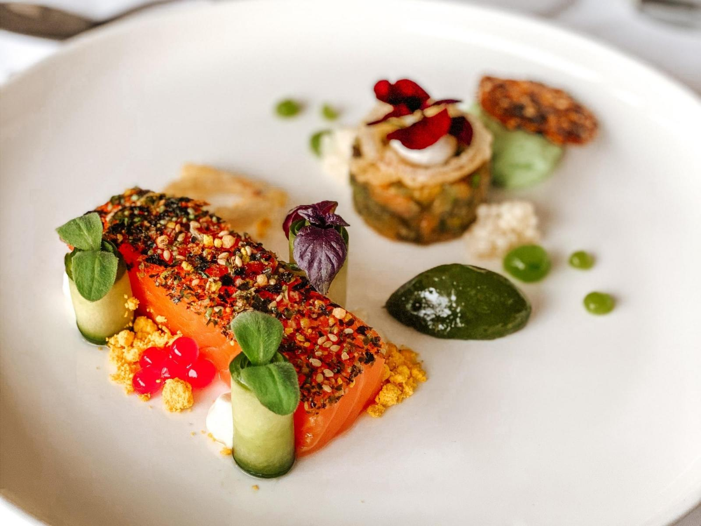
Gerookte Zalm met Kruidentopping
Zachte zalm met een krokante kruidenkorst, geserveerd met frisse komkommer en lichte citrustonen. Een elegante en verfijnde klassieker met moderne twist.
-
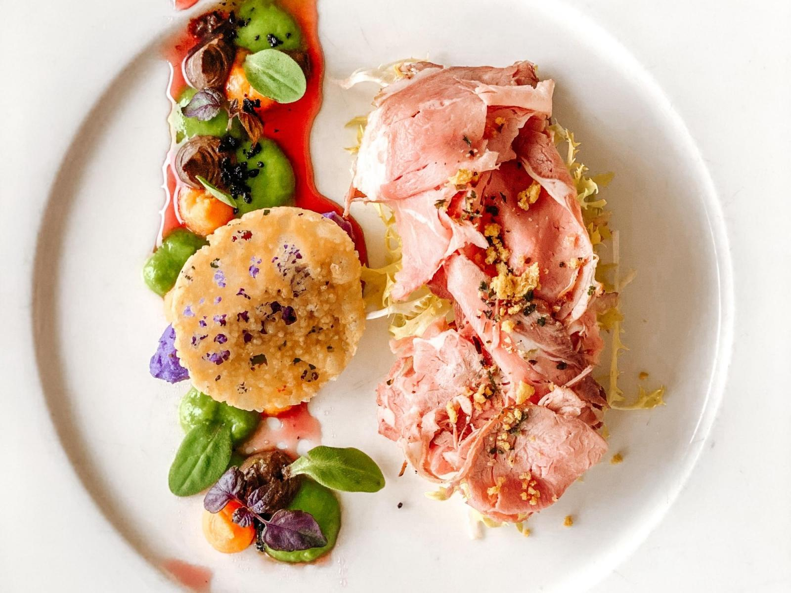
Seafood Boil Deluxe
Een royale selectie van schaal- en schelpdieren, gecombineerd met groenten en een krachtige, boterige kruidensaus. Perfect voor liefhebbers van rijke, hartige smaken uit de zee.
-
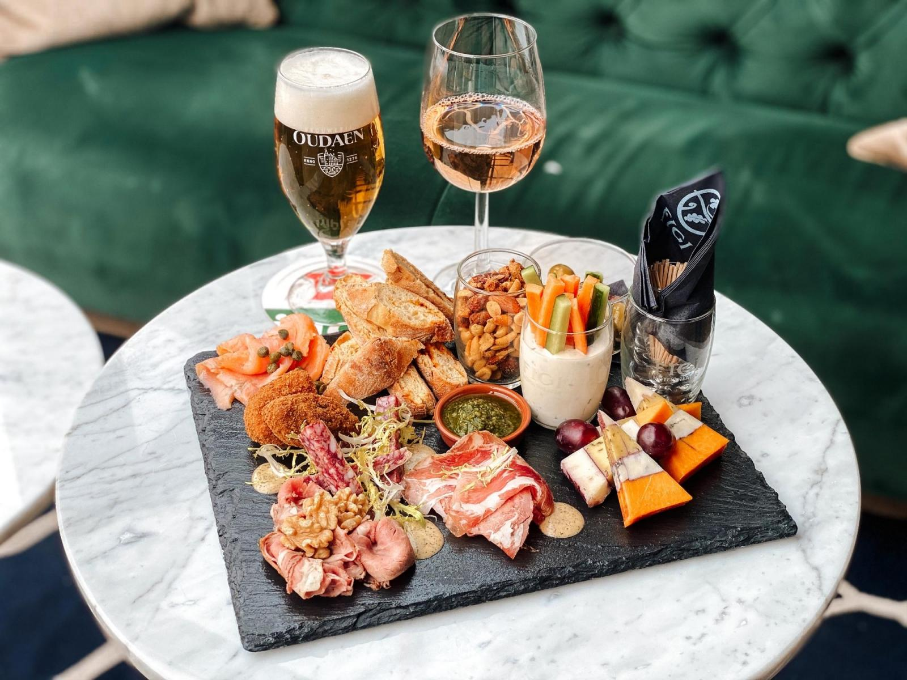
Koningsdiner Plateau
Een luxe plateau met een variatie van vleeswaren, kazen, dips en brood. Verrijkt met delicate garnituren voor een royale en feestelijke tafelervaring.
-
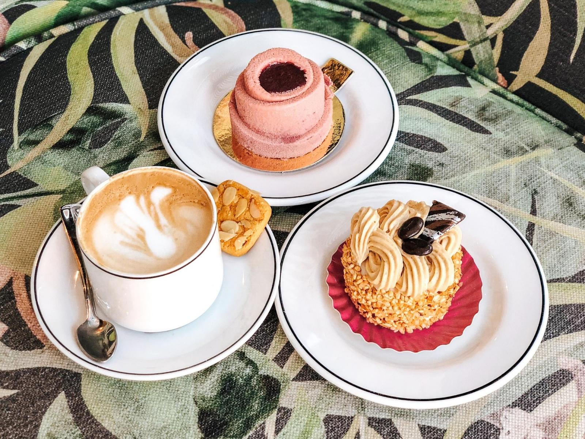
Ontbijtplateau met Koffie & Gebak
Een uitnodigend ontbijt met vers gebak, romige cappuccino, en een selectie zoete lekkernijen. De perfecte start van een ontspannen dag.
Ervaar de pure smaak van FIGI
Reserveer eenvoudig online een tafel voor een diner of feestje. Bellen kan natuurlijk ook op 030 692 74 00.
Reserveer je Tafel